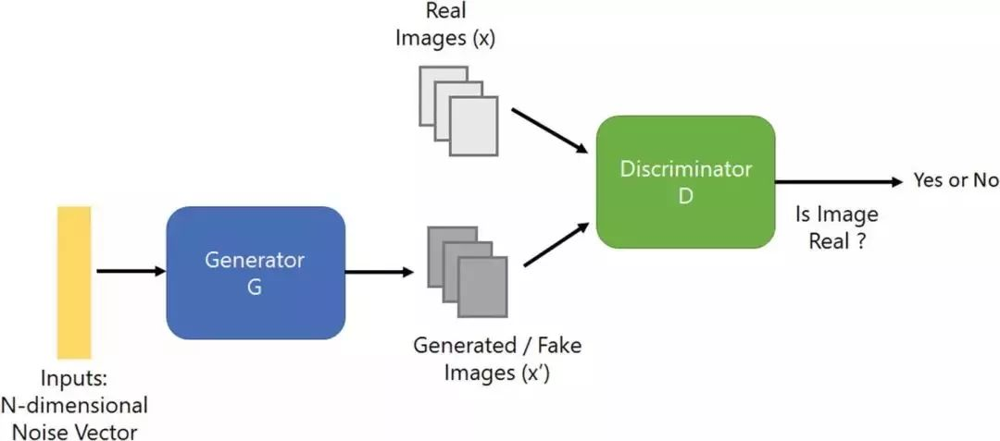
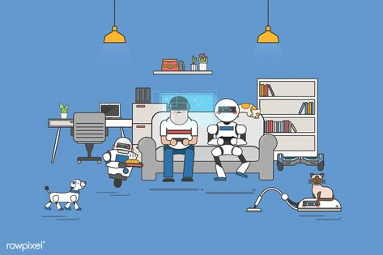
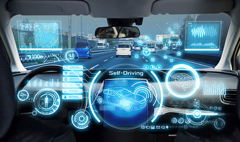

One of the state of the art in AI is Generative adversarial network. According to IBM Developer, ‘GANs are the generative models that use two neural networks pit against each other, a generator and a discriminator. The generator or generative network is a neural network that is responsible for generating the new data or content that resembles the source data. The discriminator or discriminative network is a neural network that is responsible for differentiating between the source data and the generated data.’ (Huzaifah Saleem 2020, p.1). To put it in simplicity, GANs are models that can tell the differences between the real datas and the fake ones. GANs were introduced to the public for the first time by Ian Goodfellow and his partners at University of Montreal in 2014. At that time, they were considered to be ‘the most interesting idea in the last 10 years in Machine Learning’ (Yann Lecun) and I believe it will continue to “rule the kingdom” for many years to come. These models have many usages, for example: enhance cyber security by recognizing the similarities in patterns added by hackers; translating texts into colorful images; produce realistic images from just a sketch or a poorly scripted images.
 With AI comes a lot of possibilities and chances. Our everyday life has filled with AI’s presence before we even pay a notice. Reading, writing and hearing are some of it amazing purposes. Before, we used to think that only humans are given these amazing gifts in order to self- develop and communicate with each other. Today, machine can also do that, somewhat even better than us. We rely on these functions on days we are too tired to read another piece of paperwork or to write another 10-page-length report after hours at work. As a matter of fact, some of the biggest news organizations like Reuters or The New York Times have used artificial intelligence to write for them for quite a while now. Self-driving cars are a part of AI’s purpose as well as we use it in direction or detecting roadblocks. We have personal assistance nowadays with the ability to hear and understand us. For example, we call out Cortana and ask for the weather today, or to lock the door, or to turn on the lights. Another applications of AI are playing and creating games. In 1997, a computer program developed by IBM called Deep Blue successfully defeated chess grandmaster Garry Kimovich Kasparov, and ever since then the list of human being defeated by machines have expanded immensely. This marks the changes in revolutionary road of AI, and how it can put humans to failure even though it was us who created it in the first place.
In the future, AI is predicted to have even deeper impact to our lives than it has ever been. There will be fully autonomous transportation that is expected to lower traffic accidents and traffic jams. It can be applied to manufacturing to increase the product quality, as well as limiting emissions. Children will have the chance to receive better education with the help of AI. More specifically, textbooks are digitized to minimize the heavy- weighted bag pack that children have to carry to school every day; there will be virtual classes for an as authentic experience as possible, and many more.
There are several technologies and developments to make all of those mentioned above possible. Internet of Things is one that will make a change in different issues like agriculture, healthcare and even smart cities. Advanced algorithm can also become a helpful partner for the reason that it can understand complexity and unique, uncommon scenarios.